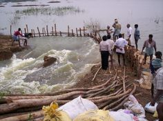
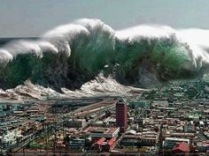
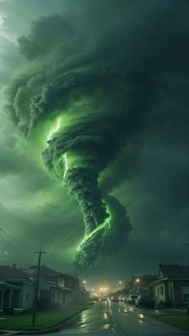
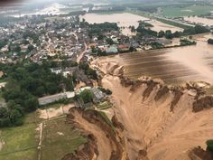
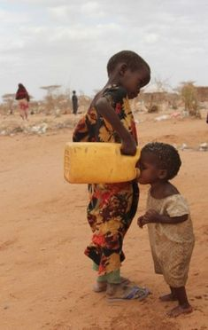
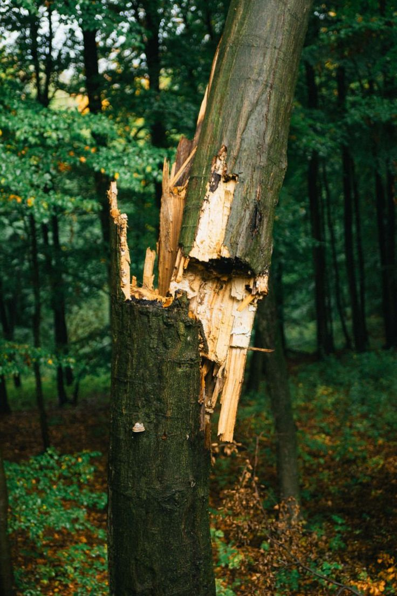

WHAT HAPPENS IF WE DON'T PROTECT WHAT GOD HAS GIVEN?






why do we need to save the enviornment?
In the heart of our planet lies a vibrant tapestry of life—the forest, a sanctuary where ancient trees whisper secrets and wildlife dances in harmony. Yet, this delicate ecosystem teeters on the brink of collapse, threatened by relentless logging and encroaching development. As the chainsaws roar, the rich symphony of chirping birds and rustling leaves fades, replaced by an unsettling silence. Each fallen tree is not just a loss of timber; it’s a blow to the very lungs of our Earth, a diminishment of biodiversity, and a severing of connections that have flourished for millennia. If we do not act now, future generations may only know forests through the faded pages of history books, mere shadows of the lush, living world that once thrived. It is our responsibility to stand as guardians of these green giants, to rekindle our bond with nature, and to fight fiercely for their survival. For in saving the forest, we save ourselves.STAY CONNECTED!!
Join Us in Making a Difference
As we stand at a pivotal moment for our planet, every action counts. Together, we can protect the beauty and biodiversity of our natural world for generations to come. Whether you choose to volunteer, donate, or simply spread the word about our initiatives, your involvement is vital.
Get Involved Today!
Explore our services and find out how you can contribute. Together, we can create a sustainable future where nature thrives and communities flourish.
Thank you for visiting. Let’s work hand in hand to protect the Earth we all share!